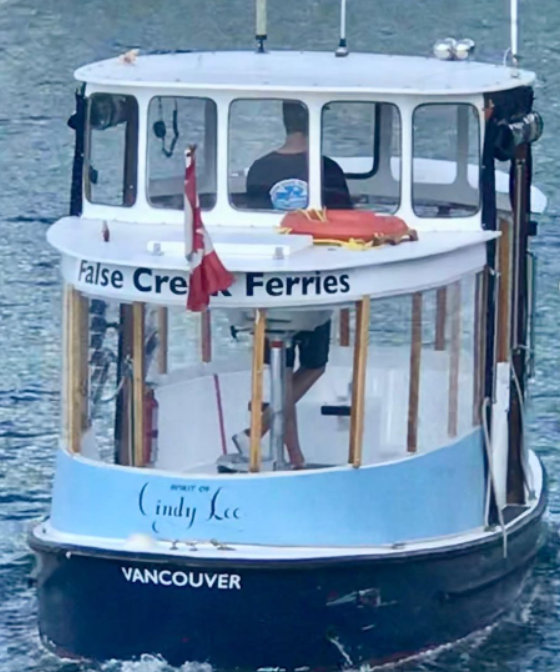
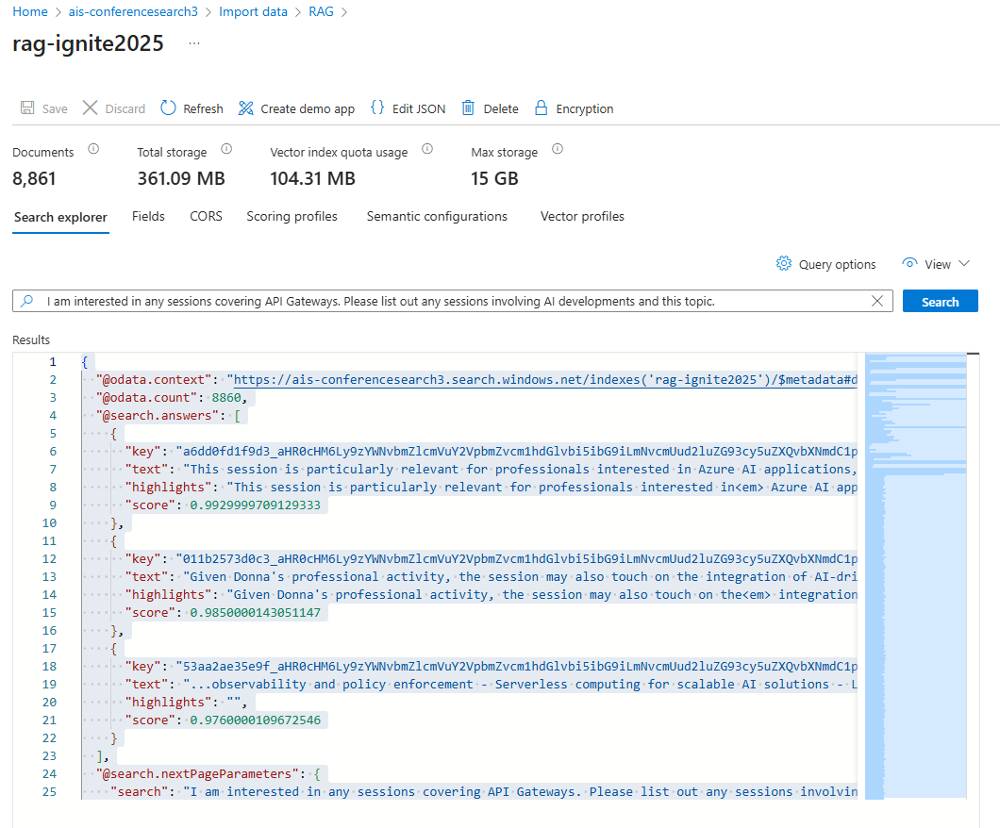
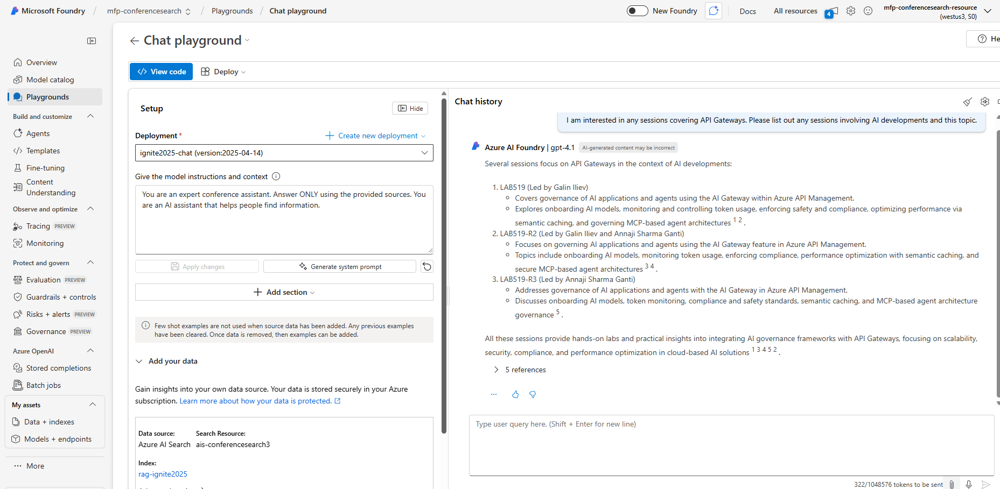

Adam Mais
Building a Conference Search System with RAG: What It’s Great At and What Comes Next
I recently built a conference search system using a Retrieval-Augmented Generation (RAG) approach on Azure. The goal was to support questions about a large conference dataset that would be difficult to answer with traditional keyword search alone.
The Initial Data Pipeline
The foundation of the system was a set of structured conference JSON documents describing sessions and speakers. Because LinkedIn discourages direct querying and scraping, I used Bing Grounded Search to responsibly augment the speaker profiles with publicly available information. This enrichment step produced high-quality background data on speakers, including roles, company affiliations, and professional focus.
All session and enriched speaker content was then loaded into Azure AI Search, vectorized using Azure OpenAI embeddings, and connected to GPT-4.1 for RAG-based question answering. This setup worked for a range of natural-language queries, such as:
- Finding sessions related to API Gateways
- Exploring a speaker’s background and how it connects to their presentation

Azure AI Search Explorer displaying the nearest document chunks retrieved for the query, ranked by relevance score.

The RAG chat playground above shows the system in action, answering questions about the conference dataset.
For these exploratory, explanatory, and comparative use cases RAG performs well. However, RAG isn't designed for aggregation or global analytics. Questions like "How many sessions are sales-oriented versus technical?" would require the context of the entire knowledge base. A pure RAG pipeline can only reason over a limited set of chunks it retrieves for each query (most modern RAG systems return the closest N chunks to the vector representation of the query). Therefore, RAG is fundamentally unsuitable for answering questions on global statistics.
An Improved Pipeline
The natural next step for the system is therefore a multi-tool architecture, where each component is used for what it does best:
- Structured Data Layer: Maintain clean, structured fields such as speaker company and session type.
- Deterministic Analytics Layer: Use filtered queries and aggregations (via Azure AI Search facets or a lightweight database) to compute accurate counts and breakdowns.
- Query Understanding:
- Classify incoming user questions as either:
- Analytical (“How many”, “What percentage”) or
- Exploratory (“Tell me about”, “Compare”, “Find”)
- Classify incoming user questions as either:
- Routing:
- Route analytical questions to deterministic queries
- Route exploratory questions to the RAG system
- GPT as the Narrative Layer: Use GPT-4.1 to explain, contextualize, and summarize both retrieved content and computed statistics in natural language.
Takeaway
This project reinforced an important design principle: RAG is a powerful reasoning and discovery tool, but it is not a replacement for structured analytics. Used correctly, it enables rich exploration of sessions and speakers, supports deep comparative analysis, and dramatically improves discoverability across large unstructured corpora. To answer higher-level aggregation questions with the same confidence, it must be paired with deterministic querying inside an agentic orchestration layer.